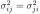
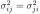
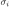
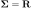
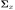
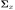
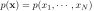
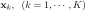
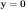

- Multiple Random Variables
Each outcome of a random experiment may need to be described by a set
of random variables
 , or in the form of
a random vector
. In signal
processing
, or in the form of
a random vector
. In signal
processing  is often used to represent a set of
is often used to represent a set of  samples
of a random signal
samples
of a random signal  (a random process).
(a random process).
- Mean Vector
The expectation or mean of a random variable  is
defined as
is
defined as
The mean vector of a random vector is defined as
which can be interpreted as the center of gravity of an N-dimensional
object with
being the density function.
- Covariance Matrix
The covariance of random variables and  is defined as
is defined as
|
 |
|
|
| |
|
|
(50) |
When ,
is the
variance of variable , which can be interpreted as the amount
of dynamic energy (or information) contained in . If an
off-diagonal component
 is zero, the two variables
and are uncorrelated or decorrelated, and
The covariance matrix of a random vector is defined
as
is zero, the two variables
and are uncorrelated or decorrelated, and
The covariance matrix of a random vector is defined
as
![$\displaystyle {\bf\Sigma}_x = E[({\bf x}-{\bf m})\,({\bf x}-{\bf m})^T]
=E({\bf...
...& \ddots & \vdots \\
\sigma_{N1}^2 & \cdots & \sigma_{NN}^2\end{array}\right],$](img129.svg) |
(52) |
The ith diagonal component
is the
variance of , and the trace can be interpreted as the total
energy or information contained in :
where
are the eigenvalues of
 .
As
,
.
As
,
 is
symmetric. Also,
is positive semi-definite:
is
symmetric. Also,
is positive semi-definite:
|
|
|
|
| |
|
|
(54) |
If all off-diagonal components
 are zero,
then is uncorrelated. If
are
independent (
), then they are
also uncorrelated. But uncorrelated variables are not necessarily
independent. If is normally distributed, then its components
are independent if and only they are uncorrelated.
are zero,
then is uncorrelated. If
are
independent (
), then they are
also uncorrelated. But uncorrelated variables are not necessarily
independent. If is normally distributed, then its components
are independent if and only they are uncorrelated.
If the covariance
between and is divided
by the standard deviations  and , it is normalized
to become the Pearson correlation coefficient:
As the covariance can be considered as an inner product of
and ,
, the
Cauchy-Schwarz inequality applies:
i.e.,
- Correlation Matrix
The correlation matrix of is defined as
where
If , then
.
- Mean and Covariance under Orthogonal Transforms
Given an orthogonal matrix
![${\bf A}=[{\bf a}_1,\cdots,{\bf a}_N]$](img154.svg) composed of orthogonal column vectors satisfying
, i.e.,
,
an orthogonal transform of can be defined as
composed of orthogonal column vectors satisfying
, i.e.,
,
an orthogonal transform of can be defined as
The resulting  is also a random vector. The inverse transform is:
is also a random vector. The inverse transform is:
![$\displaystyle {\bf x}={\bf A}{\bf y}=[{\bf a}_1, \cdots, {\bf a}_{N}]
\left[ \b...
...ray}{c} y_1 \\ \vdots \\ y_{N} \end{array}\right]
=\sum_{i=1}^{N} y_i {\bf a}_i$](img160.svg) |
(61) |
Consider the squared norm of vector , the total amount of energy
contained in :
 |
(62) |
This is Parseval's theorem, indicating that the total energy is
conserved under any orthogonal transform.
The mean vector  and the covariance matrix
and the covariance matrix
 of
are related to the
of
are related to the  and
 of
by:
and
 of
by:
and
|
|
|
|
| |
|
|
(64) |
The orthogonal transform does not change the trace of
:
Due to the commutativity of trace:
, we have:
i.e., the total amount of dynamic energy or information contained in
is conserved by the orthogonal transform
 .
.
- Estimation of
 and
and
When
 is not known, and
cannot be found based on their definitions. However, they can be estimated if
a set of outcomes (samples)
 of the random
experiment in question can be observed.
The sample mean
can be obtained as
The unbiased sample covariance
 can be obtained
as
can be obtained
as
where
If , then
and the above can be approximated as
Note that the rank of the
estimated covariance matrix
is at most  (if all
(if all  samples in the dataset
samples in the dataset
 are independent), due to the constraining equation:
If , then
does not have a full rank and is
therefore noninvertible.
are independent), due to the constraining equation:
If , then
does not have a full rank and is
therefore noninvertible.
- Positive definiteness of sample covariance matrix
The sample covariance matrix
is positive semi-definite.
To see this, we first assume
 without loss of
generality, and consider the following quadratic form with any
vector
:
without loss of
generality, and consider the following quadratic form with any
vector
:
i.e.,
is positive semi-definte. This quadratic
form is zero only if
.
Moreover,
is positive definite if the samples
span the N-D vector space, i.e., or
more of the sample vectors are independent of each other.
To see this, we first assme the quadratic form above is zero:
i.e.,
. Further,
we represent
as a linear combination of
that span the N-D space:
 |
(73) |
we therefore have
 |
(74) |
Now we have proven that if
, then
, or equivalently, if
, then
, i.e.,
is
positive definite. Consequently, all of its eigenvalues
are positive, and